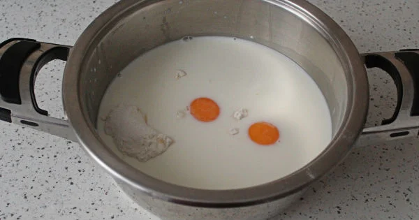
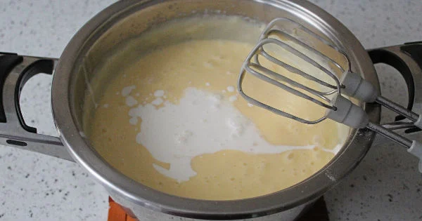
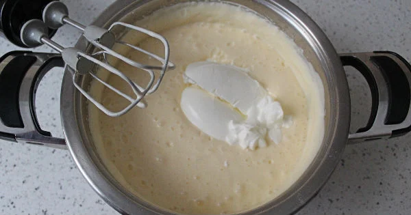
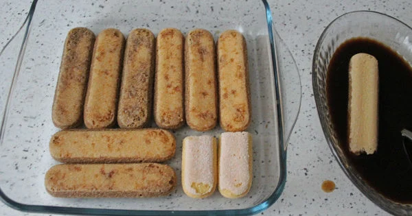
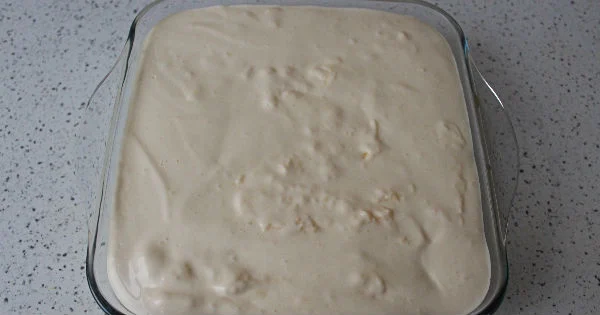

Yumurta, süt, şeker, nişasta ve unu bir tencereye aktarıp güzelce karıştırın ve ocağın üzerine alıp pişirin. Pişirirken karıştırın ve muhallebi kıvamı almasını sağlayın.

Kıvam alan muhallebinin içerisine kremayı ilave edip güzelce çırpın.

Ardından labneyi de ilave ederek güzelce çırpın ve kremanızı üzerini streç filmleyerek soğumaya bırakın. Ne kadar dinlenirse lezzeti o kadar güzel olacaktır. Dilerseniz buzdolabında da soğumaya bırakabilirsiniz.

Krema soğurken küçük boy kare borcamın içerisine kedidili bisküvileri kahveyle ıslatarak dizin.

Üzerine kremanın yarısını ilave edin. Bir kat daha kahveyle ıslatılmış kedidili dizin. Üzerine son kalan kremayı ilave ederek üzerini düzleyin.

Üzerine kakao serpin ve buzdolabında en az 2 saat kadar dinlendirin. Ne kadar dinlenirse o kadar lezzetlenir. Soğuyup dinlendikten sonra dilimleyerek servis edin.